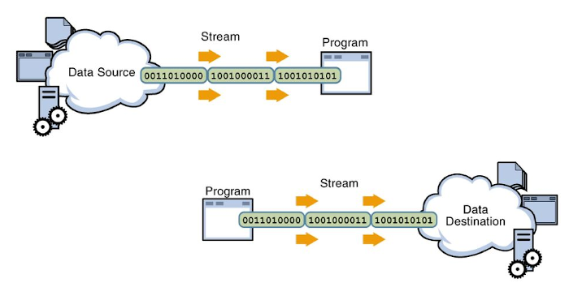
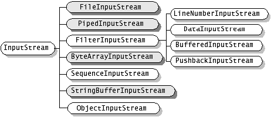
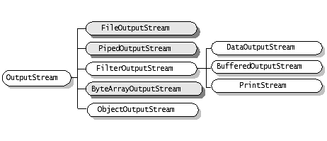
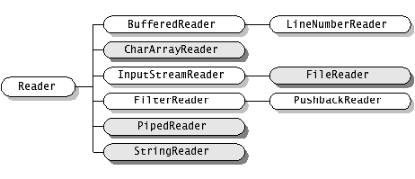
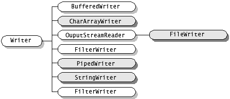
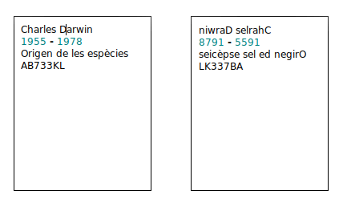
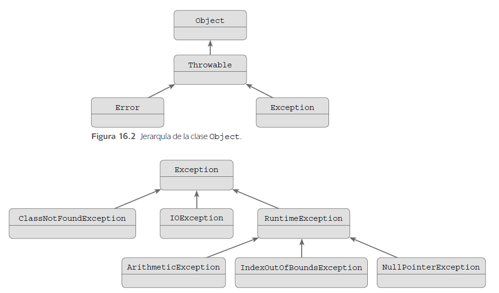

Tema 7. Entrada, eixida i gràfics
Resultat d'aprenentatge associat
RA5. Realitza operacions d'entrada i sortida d'informació utilitzant procediments específics del llenguatge i llibreries de classes..
Criteris d'avaluació
- RA5.1. S'ha utilitzat la consola per realitzar operacions d'entrada i sortida d'informació.
- RA5.2. S'han aplicat formats en la visualització de la informació.
- RA5.3. S'han reconegut les possibilitats d'entrada / sortida del llenguatge i les llibreries associades.
- RA5.4. S'han utilitzat fitxers per emmagatzemar i recuperar informació.
- RA5.5. S'han creat programes que utilitzin diversos mètodes d'accés al contingut dels fitxers.
- RA5.6. S'han utilitzat les eines de l'entorn de desenvolupament per crear interfícies gràfics d'usuari simples.
- RA5.7. S'han programat controladors d'esdeveniments.
- RA5.8. S'han escrit programes que utilitzin interfícies gràfics per a l'entrada i sortida d'informació. Tainted Love Imelda May
Introducció
Note
“Un programa es comunica amb l’usuari i amb el món exterior”
Una part important de tot llenguatge de programació és com s’establirà el contacte amb l’exterior, bé siga mitjançant la consola o a través del sistema de fitxers, per finalment poder actuar amb l’usuari d’una aplicació en execució. Ambdós, consola i sistema de fitxers, poden funcionar tant d’entrada als nostres programes com d’eixida.
Java defineix una abstracció, els streams o fluxos per tractar la comunicació d’informació amb l’exterior. Per entendre-ho millor, un stream o flux és com un canal de comunicació entre un origen i un destí. Per exemple suposem el cas d’un programa que quan arranque haja de llegir una llista de clients d’un fitxer de text per crear una agenda. En aquest cas l’origen seria el fitxer de text i el destí el programa o aplicació que s’encarrega d’emplenar l’agenda amb el llistat de clients, doncs bé, l’stream en aquest escenari seria el canal de comunicació que s’establiria entre el fitxer de text i el programa per tal que aquest puga llegir la informació.

A la imatge anterior es poden observar dos tipus de fluxos de dades: El primer és un flux d'entrada de dades, s'enten d'entrada perquè va del sistema de fitxers al programa, mentre que el segon representa un flux de dades d'eixida, ja que aquest va del programa al sistema de fitxers.
En aquest tema explicarem com Java tracta mitjançant objectes l’establiment d'aquests canals de comunicació i quines són les operacions que hi podem fer i com s’han d’utilitzar aquestes abstraccions de Java. D’altra banda Java també ofereix el mecanisme d’excepcions per controlar els errors sobrevinguts. Una excepció és un problema que es produeix en temps d’execució. Java permet controlar aquests problemes i programar amb els try...catch la solució als errors en temps d’execució.
Entrada i eixida bàsiques
Com hem dit abans, Java organitza la entrada i eixida mitjançant l’ús d’streams, que són abstraccions en realitat, i aquests streams el que fan es transportar la informació del programa o aplicació a dispositius externs. Aquests dispositius externs poden ser bé fitxers o inclús la consola, que es tractada com un fitxer per Java.
Flux i jerarquia de classes
Com que les possibilitats que tenim en programació respecte de l’ús de fitxers és ampla, podem: llegir de fitxers, escriure en fitxers, llegir per una entrada com un teclat System.in o escriure en una eixida com un monitor System.out, Java en primera instància distingeix entre dos tipus de fluxos: flux de bytes i flux de caracters
| E/S | Bytes | Caracters |
|---|---|---|
| Flux entrada | InputStream | Reader |
| Flux eixida | OutputStream | Writer |
Java declara quatre classes abstractes, és a dir, que no podem instanciar cap objectes d'aquestes classes, que deriven directament de la superclasse «Object» que són: InputStream, OutputStream, Reader i Writer.
InputStream és la base per a totes les classes definides per al flux d’entrada de dades a nivell de bytes. A la imatge següent es mostren totes les classes que deriven d'InputStream. De totes les classes derivades de la classe abstracta InputStream, veurem amb més detall les següents: FileInputStream, DataInputStream i ObjectInputStream.

OutputStream és la classe base per a les classes que gestionen el flux d’eixida a nivell de bytes. A la imatge següent es poden observar totes les seues classes derivades. Pel que fa a aquesta classe abstracta, veurem amb més detall: FileOutputStream, DataOutputStream, PrintStream i ObjectOutputStream.

Reader és la classe per llegir streams a nivell de caracter. Observa les classes derivades a la imatge següent. D'aquesta classe abstracta veurem amb més detall: BufferedReader, InputStreamReader, FileReader

Writer és la classe per escriure a streams a nivell de caracter i les classes que deriven d'ell són les que es poden veure a la següent imatge. De totes les derivades ens centrarem en: OutputStreamWriter, FileWriter, BufferedWriter i PrintWriter.

Entrada i eixida per consola en Processing IDE
La consola com a eina d’eixida i entrada bàsica d’informació
Criteris d'avaluació associats
- RA5.1. S'ha utilitzat la consola per realitzar operacions d'entrada i sortida d'informació.
- RA5.2. S'han aplicat formats en la visualització de la informació.
- RA5.3. S'han reconegut les possibilitats d'entrada / sortida del llenguatge i les llibreries associades.
En Processing IDE, la consola no és el canal principal d’interacció amb l’usuari, ja que aquest entorn està pensat sobretot per a aplicacions gràfiques i interactives. Tot i això, la consola continua sent molt útil per a:
- mostrar informació i resultats
- indicar l’estat del programa
- detectar errors i depurar codi
- fer proves ràpides amb entrada molt bàsica
En aquest bloc treballarem la eixida d’informació per consola i veurem un mecanisme senzill per capturar entrada de dades en Processing, sense utilitzar Scanner.
Eixida de dades per consola
La forma més habitual de mostrar informació en Processing és utilitzar la consola mitjançant l’objecte System.out o les funcions pròpies print() i println().
Exemples:
Aquestes instruccions permeten mostrar:
- valors de variables
- resultats de càlculs
- missatges informatius
La consola és especialment útil per comprovar què està passant dins del programa mentre s’executa.
Activitat 701. Missatges per consola
Escriu un programa que mostre per consola:
- Un missatge de benvinguda
- El valor de tres variables diferents (enter, real i text)
- Un missatge final indicant que el programa ha acabat
Mostrar informació amb format
Quan volem mostrar informació de manera més clara o ordenada, podem utilitzar formats. Processing permet usar printf() igual que Java.
Exemple:
int edat = 20;
float nota = 8.345f;
System.out.printf("Edat: %d anys%n", edat);
System.out.printf("Nota final: %.2f%n", nota);
Formats habituals:
%d→ nombres enters%f→ nombres reals%.2f→ nombre real amb dos decimals%s→ text%n→ salt de línia
L’ús de formats millora molt la llegibilitat de la informació mostrada.
Activitat 702. Eixida amb format
Declara variables per al nom d’un alumne, la seua edat i una nota mitjana. Mostra tota la informació per consola utilitzant printf() i formats adequats.
Entrada de dades bàsica amb el teclat en Processing
Particularitats de Processing IDE
Processing IDE és un entorn de desenvolupament senzill que no té la potència d'altres entorns com Eclipse IDE o Visual Studio Code, per tant moltes de les classes d'entrada i eixida que veurem en aquest tema no es podran provar en Processing. Sempre podem obrir un projecte nou en Eclipse o Visual Studio i provar els exemples que no funcionen en Processing IDE.
Processing no està pensat per a una entrada de dades per consola com Java clàssic, però ofereix un mecanisme molt senzill per capturar l’entrada de l’usuari mitjançant el teclat: la variable key i la funció keyPressed().
Aquest mecanisme permet llegir caràcter a caràcter, suficient per a entrades simples.
Exemple: lectura d’un caràcter:
Cada vegada que l’usuari prem una tecla, Processing executa automàticament aquesta funció.
Activitat 703. Caputra de tecles
Crea un programa que mostre per consola totes les tecles que va prement l’usuari. Prova a distingir lletres, números i la barra espaiadora.
Entrada de text senzilla (simulant un Scanner)
Podem simular una entrada de text similar a Scanner acumulant els caràcters introduïts per l’usuari fins que preme la tecla ENTER.
Exemple:
String entrada = "";
void keyPressed() {
if (key == ENTER) {
println("Text introduït: " + entrada);
entrada = ""; // reiniciem l’entrada
} else {
entrada += key;
}
}
Aquest codi permet:
- escriure text amb el teclat
- mostrar-lo per consola quan es prem ENTER
És una forma molt bàsica d’entrada de dades, però suficient per entendre com Processing gestiona la interacció amb l’usuari.
Activitat 704. Entrada de paraules
Modifica el programa perquè l’usuari introduïsca una paraula i el programa la mostre per consola en majúscules quan es preme ENTER.
Limitacions de l’entrada per consola en Processing
Cal tindre en compte que aquest tipus d’entrada:
- no és bloquejant (el programa continua executant-se)
- no és adequada per a dades complexes
- es fa de manera asíncrona
Per aquest motiu, en els següents blocs del tema:
- la entrada principal de dades es farà mitjançant fitxers i interfícies gràfiques
- la consola quedarà com a eina de suport i depuració
Activitat 705. Control d'errors en l'entrada per consola
- Validació de dades
- Gestió d'errors habituals
Introducció als fitxers
"Quan les dades han de sobreviure al programa"
Criteris d'avaluació associats
- RA5.3. S'han reconegut les possibilitats d'entrada / sortida del llenguatge i les llibreries associades.
Fins ara, tota la informació que utilitza el programa desapareix quan aquest s’atura. En aquest bloc introduirem els fitxers com a mecanisme per guardar informació de manera permanent.
En Processing IDE, els fitxers són especialment importants perquè permeten:
- Guardar resultats
- Carregar configuracions
- Reutilitzar dades entre execucions
Aquest bloc és conceptual i pràctic alhora, i servirà de base per als següents apartats del tema.
Què és un fitxer
Un arxiu o fitxer és un conjunt de bytes que són emmagatzemats en un dispositiu. Un arxiu o fitxer es identificat per un nom i la descripció de la carpeta o directori (la ruta) que el conté. Una de les principals finalitats dels arxius és tindre desats en memòria secundària, quan les aplicacions ja han acabat d’executar-se, i que siguen recuperables després.
Un fitxer sUn arxiu o fitxer és un conjunt de bytes que són emmagatzemats en un dispositiu. Un arxiu o fitxer es identificat per un nom i la descripció de la carpeta o directori (la ruta) que el conté. Una de les principals finalitats dels arxius és tindre desats en memòria secundària, quan les aplicacions ja han acabat d’executar-se, i que siguen recuperables després.’ha de poder llegir, actualitzar, esborrar registres i tornar a guardar-se de nou amb tots els canvis realitzats. Segons el dispositiu físic que els emmagatzeme, els arxius poden ser directes o seqüencials, el primer implica que per poder accedir a qualsevol registre, hem de passar prèviament pels anteriors, per exemple una cinta magnètica, mentre que el segon tipus d’arxiu permet l’accés directe al registre en qüestió sense haver de passar pels anteriors.
En Java un arxiu és una seqüencia de bytes que contenen la informació emmagatzemada. Per poder treballar amb aquestes seqüencies de bytes, Java disposa de classes com són els tipus bàsics (int, double, string..). D’una altra banda, com ja hem explicat abans, un flux és una abstracció que es refereix a una corrent (stream) de dades entre un origen (també conegut com a font o productor) i una destinació o embornal (consumidor) i la connexió que existeix entre els dos també es coneix com a pipe o tub per on circules les dades.
Quan comença qualsevol execució d’un programa Java, es creen tres objectes flux, canals pels que pot fluir informació d’entrada o eixida; aquests objectes estan definits a la classe System i són:
- System.in: entrada estàndard, permet l’entrada de dades des del teclat.Una excepció és un fallo que es produeix en temps d’execució. Classe InputStream
- System.out: eixida estàndard, permet la programa imprimir per pantalla. Classe PrintStream
- System.err: eixida d’errors, permet al programa imprimir errors per pantalla. Per defecte sol ser la mateixa eixida que System.out. Classe PrintStream
En resum, un fitxer és un conjunt de dades emmagatzemades en un dispositiu de memòria secundària (disc dur, SSD, USB…). A diferència de les variables, el contingut d’un fitxer no es perd quan el programa finalitza.
En programació, els fitxers s’utilitzen principalment per:
- Guardar informació
- Recuperar dades
- Compartir informació entre programes
Podem distingir, de manera general, dos tipus de fitxers:
- Fitxers de text: contenen informació llegible (txt, csv…)
- Fitxers binaris: contenen dades codificades (imatges, dades numèriques, objectes…)
La classe File
Per poder identificar d’un fitxer al sistema de fitxers de qualsevol sistema operatiu, necessitem: nom i ruta. Per exemple ‘/user/data/file.txt’. El fitxer es diu file.txt i la ruta en la qual es troba és ‘/user/data/’. Aquest identificador de fitxer és el que es passa al constructor de la classe per tal d’obrir un flux.
Veiem un altre exemple d'ús de la classe File
Ubicació dels fitxers en Processing IDE
En l’exemple anterior hem utilitzat la classe File per tal d’instanciar un stream al fitxer que li hem passat per paràmetre «prova.txt». Compte que s’ha de passar la ruta absoluta d’on es troba el fitxer utilitzant la funció de Processing IDE sketchPath().
Hi ha alternatives al constructor de la classe File que hem mostrat a l’exemple anterior, es pot construir també amb dos paràmetres: ruta i nom del fitxer o inclús indicar-li la ruta mitjançant un altre objecte File.
Els mètodes de la classe File són:
| Mètode | Explicació |
|---|---|
| public boolean exists() | Torna true si el fitxer existeix |
| public boolean canWrite() | Torna true si es pot escriure al fitxer |
| public boolean canRead() | Torna true si es només de lectura |
| public boolean isFile() | Torna true si és un fitxer |
| public boolean isDirectory() | Torna true si és un directori |
| public boolean isAbsolute() | Torna true si el directori té ruta completa |
| public long length() | Torna la mida en bytes del fitxer |
| public long lastModified() | Torna el timestamp de l’última modificació |
| public String getName() | Torna una string amb el nom del fitxer |
| public String getPath() | Torna una string amb el path del fitxer |
| public String getAbsolutePath() | Torna la ruta absoluta del fitxer |
| public boolean setReadOnly() | Converteix el fitxer en només lectura |
| public boolean delete() | Elimina el fitxer o directori (si està buit) |
| public boolean renameTo(File nou) | Canvia el nom pel del fitxer nou |
| public boolean mkdir() | Crea el directori del fitxer |
| public String[] list() | Torna un array d’strings dels elements |
Activitat 706. Class File
Crea un projecte en Processing IDE que obriga un fitxer de prova qualsevol, per exemple: prova.txt. Revisa els mètodes de la classe File i comprova el funcionament d'alguns d'ells per exemple: getName(); Mostra per pantalla una fitxa en la que es mostre la següent informació:
- Nom del fitxer
- Ruta absoluta del fitxer
- Data de l'última vegada que s'ha modificat
Carpetes i organització de fitxers
A mesura que un projecte creix, és recomanable organitzar els fitxers en carpetes. La classe File permet treballar també amb carpetes.
Exemple:
Errors habituals
Quan treballem amb fitxers poden aparèixer problemes com:
- Fitxers inexistents
- Rutes incorrectes
- Permisos insuficients
La gestió d’aquests errors es fa mitjançant el mecanisme de les excepcions com ja varem veure al tema 4
Com hauràs pogut comprovar amb la classe File t'ha resultat impossible escriure o llegir d'ell. A continuació estudiarem amb més detall les diferents classes que disposa Java pel tractament de l'entrada i eixida d'informació (Streams). Per tal entendre-ho millor, dividirem aquesta secció en dos blocs: Tractament a nivell de text amb les classes abstractes Writer i reader i les seues classes derivades i tractament a nivell de byte amb les classes abstractes InputStream i OutputStream i les seues subclasses.
Fitxers de text: guardar i recuperar informació
El primer pas real per a la persistència de dades
Criteris d'avaluació associats
- RA5.4. S'han utilitzat fitxers per emmagatzemar i recuperar informació.
- RA5.5. S'han creat programes que utilitzin diversos mètodes d'accés al contingut dels fitxers.
En aquest bloc aprendrem a escriure i llegir fitxers de text. A diferència del bloc anterior, ara sí treballarem amb dades reals que es guardaran en disc i es podran recuperar en una altra execució del programa.
Al cap i a la fi els arxius, en una gran majoria, solen ser seqüències de caracters i des del punt de vista lògic ens resulta més natural treballar amb ells a aquest nivell.
Treballarem dues vies:
- Classes estàndard de Java (PrintWriter, BufferedReader)
- Funcions pròpies de Processing (saveStrings(), loadStrings())
PrintStream
La classe PrintStream deriva de FilterOutputStream i el valor afegit d’aquesta classe derivada és que permet afegir el caràcter final de línia als fitxers. Aquests tipus de fluxos són sempre d’eixida i s’associen a un altre flux de bytes de més baix nivell. System.out és un objecte de tipus PrintStream. Per tant quan executem la sentència System.out.println(""); el que estem fent realment és cridar al mètode println de la classe PrintStream.
| Mètode | Explicació |
|---|---|
| public PrintStream(OutputStream destino) | Crea un objecte associat a qualsevol objecte d’eixida per paràmetre |
| public PrintStream(OutputStream destino, boolean flag) | Crea un objecte associat a qualsevol objecte d’eixida per paràmetre. Si flag és true, es produeix un bolcat automàtic al escriure final de línia. |
| public void flush() | Bolca el flux actual |
| public void print(Object obj) | Escriu la representació de l’objecte obj al flux |
| public void print(String cad) | Escriu la cadena al flux |
| public void print(char c) | Escriu un caràcter al flux |
| public void println(Object obj) | Escriu la representació de l’objecte al flux i final de línia |
| public void println(String cad) | Escriu la cadena al flux i final de línia |
Observa el codi següent. Utilitzant la classe PrintStream s'obre un fitxer 'output.txt' dintre del qual s'escriurà una sola cadena de caracters 'data' i després es tancarà l'stream una vegada finalitzat l'execució del codi.
PrintWriter
Els fluxos més utilitzats en l’eixida de caràcters són de tipus PrintWriter, aquesta classe declara constructors per associar un flux PrintWriter amb qualsevol altre de tipus Writer o bé OutputStream.
| Mètode | Explicació |
|---|---|
| public PrintWriter(OutputStream destí) | Crea un flux associat amb un altre d’eixida a nivell de byte. |
| public PrintWriter(Writer destino) | Crea un flux associat amb un altre d’eixida de caràcters de tipus Writer. |
La importància d’aquesta classe radica en que defineix mètodes print() i println() per cadascun dels tipus de dades simples, per String i per Object; la diferència entre els mètodes print() i println() està en que el segon afegeix els caràcters de final de línia a continuació dels escrits per l’argument.
| Mètode | Explicació |
|---|---|
| public void print(Object obj) | Escriu la representació de l’objecte obj al flux |
| public void print(String cad) | Escriu la cadena al flux |
| public void print(char c) | Escriu el caràcter c al flux. |
| public void println(Object obj) | Escriu la representació de l’objecte obj al flux i final de línia |
| public void println(String cad) | Escriu la cadena al flux i el final de línia |
| public void println(char c) | Escriu el caràcter c al flux i final de línia. |
Exemple
Escriure en un fitxer de text amb PrintWriter (Processing IDE)
La classe PrintWriter permet escriure text en un fitxer de manera senzilla.
És important:
- Escriure les línies amb println()
- Tancar el fitxer amb close()
Activitat 707. Crear un fitxer de text
Escriu un programa que cree un fitxer anomenat alumne.txt i guarde el teu nom, edat i curs en línies separades.
Llegir un fitxer de text amb loadStrings()
Processing ofereix la funció loadStrings() que permet llegir totes les línies d’un fitxer de text en un array de cadenes.
Cada element de l’array correspon a una línia del fitxer.
Activitat 708. Llegir un fitxer
Llig el fitxer alumne.txt creat anteriorment i mostra el seu contingut per consola.
Processar la informació llegida
Quan llegim un fitxer, sovint necessitem processar les dades.
Per exemple, si un fitxer conté números, podem convertir-los amb int() o float().
Activitat 709. Sumar valors d'un fitxer
Crea un fitxer amb diversos números (un per línia) i escriu un programa que calcule i mostre la suma total. També hauràs de:
- Modificar el fitxer
- Afegir numeros enters i decimals
- Afegir altres caracters
- Realitzar comprovacions
- Sumar els numeros enters
- Multiplicar els decimals
- Guardar el resultat en un fitxer output.txt
Activitat 710. Copiar i invertir
Basat en el codi anterior i fes que al fitxer resultat, el d’eixida, es copie el que apareix a «prova.txt», el d’entrada però a l’inrevés. Per exemple:
Un possible resultat de l'activitat anterior podria ser el que es pot observar a la imatge següent:

Afegir informació a un fitxer existent
Si volem afegir informació sense esborrar el contingut anterior, podem treballar acumulant les dades en un array i tornar-les a guardar.
Estratègia bàsica:
- Llegir el fitxer amb loadStrings()
- Afegir una nova línia
- Tornar a guardar amb saveStrings()
Activitat 711. Afegir dades
Modifica el programa perquè afegisca una nova línia amb la data actual al fitxer alumne.txt
Problemes habituals i control d'errors
En treballar amb fitxers de text poden aparèixer problemes com:
- Fitxer inexistent
- Contingut inesperat
- Errors de conversió de tipus
Aquests casos es poden controlar amb els mecanismes ja estudiats al Tema 4.
Activitat 712. Detecció de problemes
Prova què ocorre si intentes llegir un fitxer que no existeix. Explica què passa i com es podria evitar el problema.
BufferedReader a Processing IDE
A l'API de Processing existeix una classe BufferedReader. Aquesta classe s'encarrega de llegir línia a línia com un conjunt d'Strings individuals. Però s'utilitza per a llegir de fitxers i no de l'entrada (system.in) com als exemples anteriors. Per poder llegir des de teclat a Processing hem d'utilitzar el mètode keyPressed
Abans de copiar i provar el següent exemple, descarrega el fitxer positions.txt amb parells de números a cada línia separats per un tabulador.
Reader i writer
Els arxius de text són arxius de caràcters, es poden crear fluxos de bytes o de caràcters derivats de les classes abstractes Reader i Writer.
Els fluxos Reader i Writer són fluxos de Java orientats a caràcters. Amb aquests fluxos podem llegir i escriure caràcters o cadenes de caràcters al dispositius connectats mitjançant aquests fluxos.
Per llegir arxius de caràcters s’utilitzen fluxos derivats de la classe Reader on es declaren o sobreescriuen mètodes per la lectura de caràcters. Els mètodes més importants són:
| Mètode | Explicació |
|---|---|
| public int read() | Llig un caràcter en forma d’enter. Si arriba al final del fitxer torna -1 |
| public int read(char [] b) | Llig una seqüencia de caràcters fins completar l’array b o llegir el final del fitxer. Torna el nombre de caràcters llegits o -1 si arriba al final de l’arxiu |
InputStreamReader i OutputStreamWriter
Els fluxos de la classe InputStreamReader envolten (wrap) a un flux de bytes; converteixen la seqüència de bytes en seqüència de caràcters i així ja no ho hem de fer nosaltres; la classe deriva directament de Reader, pel que té disponibles els mètodes read() de la seua classe pare per la lectura de caràcters
| Mètode | Explicació |
|---|---|
| void close() | Tanca el flux i allibera tots els recursos del sistema associats |
| String getEncoding() | Retorna el nom de la codificació de caràcters que utilitza aquest flux |
| int read() | Llegeix un sol caràcter |
| int read(char[] buf, int offset, int length) | Llegeix caràcters en una part d'una matriu |
| boolean ready() | Indica si aquest flux està llest per ser llegit |
Els mètodes de la classe OutputStreamWriter són:
| Mètode | Explicació |
|---|---|
| void close() | Tanca el corrent, rentant-lo primer |
| void flush() | Redueix el corrent |
| String getEncoding() | Retorna el nom de la codificació de caràcters que utilitza aquest flux |
| void write(char [] buf, int off, int len) | Escriu una part d'una matriu de caràcters |
| void write(int c) | Escriu un sol caràcter |
| void write(String str, int off, int len) | Escriu una part d'una cadena |
Però allò normal és que no s'utilitzen directament aquestes classes sino que es faja ús de FileReader i FileWriter.
FileReader i FileWriter
Per llegir arxius de text o de caràcters es pot crear un flux del tipus FileReader, aquesta classe deriva d’InputStreamReader, hereta els mètodes read() per a llegir caràcters, el constructor té com entrada una cadena amb el nom de l’arxiu
Per exemple
| Constructor | Explicació |
|---|---|
| FileReader(File file) | Crea un nou FileReader , amb el nom del fitxer des del qual cal llegir |
| FileReader(FileDescriptor fd) | Crea un nou FileReader , donat el FileDescriptor per llegir |
| FileReader(String fileName) | Crea un nou FileReader , amb el nom del fitxer des del qual cal llegir |
Els mètodes dels que disposa FileReader són:
- Heretats de java.io.InputStreamReader: close, getEncoding, read, ready
- Heretats de java.io.Reader: mark, markSupported, read, reset, skip
- Heretats de java.lang.Object: clone, equals, finalize, getClass, hashCode, notify, notifyAll, toString, wait
No es freqüent utilitzar directament fluxos OutputStreamWriter, encara que resulta interessant perquè la classe FileWriter és una extensió d’ella. Dissenyada per escriure en un arxiu de caràcters, els fluxos d’aquest tipus escriuen caràcters amb el mètode write() a l’arxiu al que s’associa el flux quan es crea l’objecte.
| Constructor | Explicació |
|---|---|
| FileWriter(File file) | Construeix un objecte FileWriter donat un objecte File |
| FileWriter(File file, boolean append) | Construeix un objecte FileWriter donat un objecte File |
| FileWriter(FileDescriptor fd) | Construeix un objecte FileWriter associat a un descriptor de fitxer |
| FileWriter(String fileName) | Construeix un objecte FileWriter amb un nom de fitxer |
| FileWriter(String fileName, boolean append) | Construeix un objecte FileWriter amb un nom de fitxer amb un booleà que indica si s'han d'afegir o no les dades escrites |
En general no resulta eficient llegir directament d’un flux d’aquest tipus, s’utilitzarà un flux BufferedReader i BufferedWriter
BufferedReader i BufferedWriter
La lectura d’arxius de text es realitza amb un flux que emmagatzema els caràcters en un buffer intermedi, aquests no es lligen directament de l’arxiu si no del buffer. D’aquesta manera augmentem l’eficiència a les operacions d’entrada, la classe BufferedReader permet crear fluxos de caràcters amb buffer que no és més que una forma d’organitzar el flux bàsic de caràcters del que ve el text perquè al crear un flux BufferReader, aquest s’inicialitza com un flux de caràcters InputStreamReader o qualsevol altre.
El constructor de la classe té un argument de tipus Reader, FileReader o InputStreamReader, el flux creat disposa d’un buffer de grandària suficient, el qual es pot especificar en el constructor amb un segon argument encara que no fa falta. Exemples de fluxos amb buffer.
Els mètodes de la classe BufferedReader són:
| Mètode | Explicació |
|---|---|
| void close() | Tanca el flux i allibera tots els recursos del sistema associats |
| void mark(int readAheadLimit) | Marca la posició actual al flux |
| boolean markSupported() | Indica si aquest flux admet l'operació mark(), que fa |
| read() | Llegeix un sol caràcter |
| int read(char[] cbuf, int off, int len) | Llegeix caràcters en una part d'una matriu |
| String readLine() | Llegeix una línia de text |
| boolean ready() | Indica si aquest flux està llest per ser llegit |
| void reset() | Restableix el flux a la marca més recent |
| long skip(long n) | Omet personatges |
BufferedWriter, per un altre costat, escriu text en un flux de sortida de caràcters, guarda els caràcters en memòria intermèdia (buffer) per tal de proporcionar una escriptura eficient de caràcters, matrius i cadenes individuals.
Es pot especificar la mida de la memòria intermèdia o es pot acceptar la mida predeterminada. El valor predeterminat és prou gran per a la majoria de propòsits.
Es proporciona un mètode newLine(), que utilitza la pròpia noció de separador de línies de la plataforma tal com es defineix per la propietat del sistema line.separator . No totes les plataformes utilitzen el caràcter de nova línia ('\n') per acabar les línies. Per tant, es prefereix cridar aquest mètode per acabar cada línia de sortida que escriure directament un caràcter de nova línia.
Els mètodes de la classe són:
| Mètode | Explicació |
|---|---|
| void close() | Tanca el corrent, rentant-lo primer |
| void flush() | Redueix el corrent |
| void newLine() | Escriu un separador de línies |
| void write(char[] cbuf, int off, int len) | Escriu una part d'una matriu de caràcters |
| void write(int c) | Escriu un sol caràcter |
| void write(String s, int off, int len) | Escriu una part d'una cadena |
Exemple
Fitxers binaris i dades estructurades
Note
"Quan el text no és suficient. Treballar amb dades no textuals"
Criteris d'avaluació associats
- RA5.4. S'han utilitzat fitxers per emmagatzemar i recuperar informació.
- RA5.5. S'han creat programes que utilitzin diversos mètodes d'accés al contingut dels fitxers.
Els fitxers binaris permeten guardar dades en el seu format intern (bytes), tal com l'ordinador les representa en memòria.
A diferència dels fitxers de text:
- No són llegibles amb un editor de text.
- No guarden caràcters, sino bytes.
- Requereixen conéixer exactament el tipus i l'ordre de les dades per poder llegir-les correctament.
Són útils quan:
- Treballem amb moltes dades numèriques
- Volem més eficiència
- No necessitem que el fitxer siga llegible per humans.
Com ja hem explicat abans, el tractament de l'entrada eixida en java a nivell de bytes es fa amb les classes abstractes InputStream i OutputStream de les quals deriven les classes:
- FileInputStream i FileOutputStream
- PipedInputStream i PipedOutputStream
- FilterInputStream i FilterOutputStream
- ByteArrayInputStream i ByteArrayOutputStream
- ObjectInputStream i ObjectOutputStream, etc..
FileInputStream i FileOutputStream
Tot arxiu es pot considerar en sí mateix una seqüència de bytes de baix nivell i després sobre aquesta informació es pot construir informació de mes alt nivell per tal de processar dades més complexes des de tipus bàsic fins objectes.
En altres paraules, si volem obrir un flux de dades a un fitxer o arxiu i volem llegir byte a byte per després decidir nosaltres a nivell de programació que volem fer amb aquests bytes, hauríem d’utilitzar aquestes classes.
La classe FileInputStream s’utilitza per llegir bytes o grups de bytes del fitxer associat. Tots els mètodes tenen visibilitat pública i s’ha de tenir en compte quina és l’excepció que llencen per controlar els possibles errors en temps d’execució.
| Mètode | Explicació |
|---|---|
| FileOutputStream(String nombre) throws IOException; | Crea un objecte inicialitzat amb el nom d’arxiu que es passa com argument |
| FileOutputStream(String nombre, boolean sw) throws IOException; | Crea un objecte inicialitzat amb el nom d’arxiu que es passa per paràmetre. Si sw és true els nous bytes s’afegeixen al final |
| FileOutputStream(File nombre) throws IOException; | Crea un objecte inicialitzat amb l’objecte file que es passa per paràmetre |
| void write(byte a) throws IOException; | Escriu el byte ‘a’ al flux associat |
| void write(byte[] s) throws IOException; | Escriu l’array de bytes ‘s’ al flux |
| void write(byte[] s, int org, int len) throws IOException; | Llig una seqüència de bytes del flux i la desa a ‘s’ començant per ‘org’ i una mida de ‘len’. Torna -1 si arriba al final del fitxer |
| void close()throws IOException; | Tanca el flux i el fitxer queda lliure per al seu ús posterior |
Exemple 1
A continuació obrirem el fitxer «prova.txt» amb un FileInputStream per llegir-lo i desarem el seu contingut a un fitxer d’eixida «resultat.txt» que obrirem amb un FileOutputStream. Al fitxer d’eixida, bolcarem el contingut de «prova.txt»
Observa el codi anterior: Primer s'instancia un objecte de la classe FileInputStream (derivada de InputStream) en la que se li indica la ruta del fitxer amb el que volem treballar. Després aquest objecte FileInputStream s'utilitza per poder instanciar un objecte de la classe DataInputStream que utilitzarem per llegir tipus de dades primitius del fitxer.
Bàsicament aquestes classes el que fan és organitzar els bytes en tipus primitius de tal forma que ja podem treballar llegint i escrivint als fluxos: enters, caràcters, reals, cadenes etc..
| Mètode | Explicació |
|---|---|
| public DataInputStream(InputStream entrada) throws IOException | Crea un objecte associat a l’stream que es passa per paràmetre |
| public final boolean readBoolean() throws IOException | Torna el valor de tipus booleà llegit |
| public final byte readByte() throws IOException | Torna el valor de tipus byte llegit |
| public final short readShort() throws IOException | Torna el valor de tipus short llegit |
| public final char readChar() throws IOException | Torna el valor de tipus char llegit |
| public final int readInt() throws IOException | Torna el valor de tipus int llegit |
| public final long readLong() throws IOException | Torna el valor de tipus long llegit |
| public final float readFloat() throws IOException | Torna el valor de tipus float llegit |
| public final double readDouble() throws IOException | Torna el valor de tipus double llegit |
| public final String readUTF() throws IOException | Torna una cadena que es va escriure en UTF |
D’aquesta forma ja no ens hem de preocupar de saber quants bytes de memòria s’han de reservar per un caràcter o un enter. Per exemple si associem un DataOutputStream a un fitxer i després cridem al mètode writeInt, realment el que s’està fent és escriure 4 bytes d’informació al fitxer de la qual cosa s’estaria encarregant de manera transparent a l’usuari.
Escriure dades en format binari
Per escriure dades primitives utilitzem DataOutputStream.
Exemple en Processing:
Alguns mètodes disponibles:
- writeInt()
- writeFloat()
- writeDouble()
- writeBoolean()
- writeChar()
És imprescindible tancar el flux amb close().
Activitat 713. Fitxers binaris
Crea un programa que demane per consola un nom d'alumne, edat, notaFinal i ho guarde en un fitxer binari.
LLegir dades d'un fitxer binari
Per llegir dades utilitzem DataInputStream.
Ordre de lectura
Les dades s’han de llegir en el mateix ordre en què s’han escrit.
Activitat 714. Llegir d'un fitxer binari
Llig el fitxer creat anteriorment i mostra les dades amb un missatge formatat a l'aplicació de Processing IDE.
Importància de l'ordre
En un fitxer binari no hi ha separadors ni etiquetes. Només hi ha bytes.
Si escrivim:
Hem de llegir:
Si invertim l'ordre, el resultat serà incorrecte perquè els bytes no corresponen al tipus esperat.
Activitat 715. Canvia l'ordre
Canvia l’ordre de lectura i observa què ocorre. Explica el resultat.
Avantatges i inconvenients
Avantatges
- Major eficiència.
- Accés directe a dades primitives.
- Més rapidesa en lectura/escriptura.
Inconvenients
- No és llegible manualment.
- Dependència estricta de l’ordre.
- Més difícil de depurar.
Activitat 716. Compara fitxers de text i binaris
Fes una aplicació en la que es necessite l'ús de fitxers de text i també l'ús de fitxers binaris encara que siga per a finalitats distintes. Mínim s'ha de llegir i escriure dels dos fitxers.
Per tal d'instanciar un objecte de la classe DataOutputStream, on es podria escriure, ho fariem de la següent forma:
Al contrari que passava amb el DataInputStream, al codi anterior estem instanciant un objecte de la classe DataOutputStream que utilitzarem per escriure la informació desitjada.
| Mètode | Explicació |
|---|---|
| public DataOutputStream(OutputStream destino) throws IOException | Crea un objecte associat a l’outputstream que es passa per paràmetre |
| public final void writeBoolean(boolean v) throws IOException | Escriu un boolean |
| public final void writeByte(int v) throws IOException | Escriu un byte |
| public final void writeShort(int v) throws IOException | Escriu un short |
| public final void writeChar(int v) throws IOException | Escriu un char |
| public final void writeChars(String v) throws IOException | Escriu tots els chars que conté la String v |
| public final void writeInt(int v) throws IOException | Escriu un int |
| public final void writeLong(long v) throws IOException | Escriu un long |
| public final void writeFloat(float v) throws IOException | Escriu un float |
| public final void writeDouble(double v) throws IOException | Escriu un double |
| public final void writeUTF(String cad) throws IOException | Escriu la cadena cad en format UTF |
| public final int close()throws IOException | Tanca el flux |
Un altre exemple d'ús del DataInputStream:
A continuació podem veure un exemple en el que fem ús del DataOutputStream i DataInputStream. El que fa aquest exemple és escriure a un fitxer d’eixida «pluges.dat» dos valors double aleatoris per després llegir-los amb un DataInputStream i mostrar-los per pantalla.
El codi podria ser el següent:
Activitat 717. Data Input i Data Output
Crea un projecte en Processing copia el codi anterior i una vegada acabada l'execució del programa, obre el fitxer "pluges.dat" i compara el que s'ha mostrat a consola amb el que s'ha gravat al fitxer. Posa el mateix? Per què?
Activitat 718. LLig per teclat i copia
Utilitzant el mètode mouseClicked fes una aplicació de tal forma que tot allò que es teclege es guarde en un fitxer de text juntament amb l'hora a la qual s'ha escrit. Per exemple, si l'usuari escriu per pantalla el seu nom, "Manolo" i prem Intro, al fitxer d'eixida s'hauria de gravar:
[09:05:25] - Manolo
Has d'utilitzar la classe PrintStream per fer aquesta activitat.
Objectes i persistència
Note
"Guardar objectes complets"
Criteris d'avaluació associats
- RA5.5. S'han creat programes que utilitzen diversos mètodes d'accés al contingut dels fitxers.
Fins ara hem tractat el tema d'entrada - eixida d'informació utilitzant els tipus primitius o bàsics que ens proporciona el llenguatge de programació: int, char, float, String... però que passa si el que volem desar o llegir des d'un dispositiu extern és un o diversos objectes? Com es guarden i com es recuperen aquestos objectes?
Java proporciona una mecanisme que s'anomena serialització que consisteix en convertir un objecte en una seqüència de bytes de tal forma que, ara sí, es podrà desar a un fitxer o un dispositiu extern. El procés de lectura d'un objecte serialitzat a un fitxer, per contra, s'anomena desserialització.
Per tal que un objecte continue existint, és a dir, que siga persistent, una vegada ja hem finalitzat l’execució d’un programa o aplicació l’hem de desar a un arxiu d’objectes. Per poder aconseguir açò, utilitzarem les classes ObjectInputStream i ObjectOutputStream
Classe d'objecte persistent
Serialització: és el procés de convertir un objecte (incloses les referències a altres objectes) a una seqüència de bytes, així com també l'acció de reconstruir eixos bytes en un objecte viu en un futur. La serialització s'utilitza quan vols persistir un objecte, és a dir, que dure més que el que dura l'execució d'un programa o aplicació.
La declaració de la classe els objectes de la qual van a ser persistents, han de implementar la interfície «serializable» del paquet java.io, la qual és buida, no declara mètodes, simplement indica a la màquina virtual de Java que les instàncies d’aquestes classes podran gravar-se en un fitxer.
Exemples
ObjectOutputStream
Els fluxos de la classe ObjectOutputStream s’utilitzen per gravar objectes persistents. El mètode writeObject() escriu qualsevol objecte d’una classe serializable en el flux de bytes associat. Pot llençar excepcions del tipus IOException que és necessari processar.
El constructor de la classe espera un argument de tipus OutputStream, que és la base dels fluxos d’eixida a nivell de bytes, per tant, per crear aquest tipus de fluxos primer es crea un d’eixida a nivell de bytes associat a un arxiu extern i a continuació, es passa com argument al constructor de ObjectOutputStream, per exemple:
A continuació es pot escriure qualsevol objecte al flux:
ObjectInputStream
El objectes guardats en arxius amb fluxos de la classe ObjectOutputStream es recuperen i lligen amb fluxos d’entrada del tipus ObjectInputStream, aquesta classe és una extensió d’InputStream, a més a més, implementa la interfície DataInput, per això disposa de diversos mètodes d’entrada (read) per cadascun dels tipus de dades com readInt() o altres. El mètode més important definit per la classe ObjectInputStream és readObject(), el qual llig un objecte del flux d’entrada, és a dir, de l’arxiu associat al flux de baix nivell; l’objecte llegit es va escriure en el seu moment amb el mètode writeObject()
El constructor de fluxos ObjectInputStream té com entrada un altre flux de baix nivell de qualsevol tipus derivat d’InputStream, per exemple: FileInputStream associat amb l’arxiu d’objectes. A continuació es crea un flux d’entrada per llegir els objectes de l’arxiu «arxiuObjects.dat»
El constructor de la classe ObjectOutputStream llença una excepció si, per exemple, l’arxiu no existeix, aquella és del tipus «ClassNotFoundException» o «IOException», és necessari poder capturar aquestes excepcions
Compte on poses el codi
Ja que l'entorn de desenvolupament que estem utilitzant, Processing IDE, no és un IDE a l'ús com l'Eclipse IDE, Visual Studio Code o NetBeans, la serialització d'objectes pot donar errors. És molt important que el codi relatiu als ObjectInputStream i ObjectInputStream estiga escrit en fitxers que no tinguen l'extensió .pde i tinguen una extensió .java. En altres paraules, aquelles classes que siguen susceptibles de ser serialitzades:
(1) Tindran tot el codi amb els objectes ObjectOutputStream i ObjectInputStream per poder llegir i escriure objectes en fitxers. (2) Es desaran amb l'extensió java i MAI pde.
Activitat 719. Classe alumne
Dissenya una aplicació amb Processing IDE on es podrà per un costat introduir informació d'alumnes que es guardaran en un fitxer que s'anomene: 'alumnes.dat'.
Al principi l'aplicació llegirà de l'arxiu 'alumnes.dat' tots els alumnes inscrits al curs i els mostrar per pantalla, ordenats alfabèticament pel cognom.
Una vegada haja mostrat tots els alumnes, l'aplicació esperarà que s'introduisca algun alumne nou per consola, una vegada introduits totes les dades de l'alumne, aquesta es guardarà en un objecte primer i després al fitxer 'alumnes.dat' a continuació dels que ja havien estat enregistrats.
Finalment tornarà a mostrar els alumnes ordenats alfabèticament i torna a començar.
Fitxers XML
Activitat 720. Processa un document XML en Java
Crear classe Alumne crear estructura xml amb alumnes carregar un arraylist d'alumnes al main. La classe Alumne ha de tindre mètodes LoadXML ....
Activitat 721. Aplicació traductora amb XML
Excepcions
Un problema important en el desenvolupament del programari és la gestió de les errades o errors. No importa quan bé estiga planificat aquest desenvolupament i quan eficient siga l’equip desenvolupador. És una màxima en informàtica el fet que sempre apareixeran problemes. Aquests problemes inesperats són problemes o errors que apareixen en temps d’execució, per exemple: esgotament de memòria o recursos, errors en els intervals dels bucles, divisions per zero, arxius no existents, etc..
Les excepcions són el mecanisme previst per Java per tractar aquests problemes sobrevinguts. Amb les excepcions, Java dona la possibilitat al programador salvar aquest tipus de situacions de manera controlada sense que el programa o aplicació es tanque, bloquege o deixe de respondre.
Condicions d'errors en programes
Programar, escriure codi, mètodes, classes, etc.. que siga eficient, eficaç i lliure d’errades és altament complicat. El control d’errades és una part tant important en el disseny d’aplicacions que a totes les diferents metodologia de cicle de vida software, hi ha una fase que es dedica única i exclusivament a detectar aquestes errades i solucionar-les i així i tot és impossible produir programari totalment lliure d’errades.
Tractament dels codis d'error
Java inclou un mecanisme de gestió d’excepcions per poder intentat cobrir possibles errades en els programes en temps d’execució. Aquest mecanisme consisteix en capturar (catch) els errors quan es produeixen en temps d’execució.
Quan es produeix un fallo en temps d’execució es podrien fer tres coses: parar l’execució de sobte, continuar executant esperant que no passe res o establir una senyal d’error que el mateix codi amb altres sentències s’encarregue de gestionar.
Aquestes senyals que envia (throw) el programa quan es produeix alguna errada en Java s’anomenen excepcions i el bloc del codi on es posen les sentències per tal d’intentar solucionar-lo en temps d’execució és el bloc catch.
Excepcions en Java
Una excepció és un fallo que es produeix en temps d’execució. Si hem escrit bé el codi per tal de gestionar aquest fallo, el flux d’execució passa al codi destinat a gestionar les excepcions, en cas contrari el programa acaba la seua execució.
Aquestes excepcions es poden produir per exemple si intenten accedir a un element d’un array fora dels seus límits, si intentem obrir un fitxer que no existeix o està bloquejat, si dividim per zero, etc..
El model de gestió d’excepcions a Java afegeix cinc noves paraules reservades: try, throw, throws, catch i finally.
- try: bloc on es detectaran les excepcions
- catch: captura les excepcions que es produeixen al bloc try
- throw: expressió per llençar excepcions
- throws: indica les excepcions que pot llençar un mètode.
- finally: bloc opcional situat després del try catch
Les passes del model de control d’excepcions en Java són:
- El bloc try conté les instruccions o part del codi susceptible de provocar algun error.
- Si en temps d’execució es produeix algun error dins de les sentències que es troben dins del bloc try, es llença una excepció.
- S’executa el codi que es troba dins del bloc catch associat a la excepció que s’ha llençat al punt anterior.
- S’executa el bloc finally (opcional)
Exemple. Suposem una classe persona que incorporarem a la nostra aplicació. Aquesta classe té un constructor al qual se li passa el DNI, imaginem ara que de la nostra aplicació instanciem un objecte de la classe persona a la qual l direm Joan però quan cridem al constructor de la classe no li passem un DNI, aquest «mal ús» de la classe Persona, llençaria una excepció que hauria de capturar la nostra aplicació al bloc catch i és ací, en aquest bloc d’instruccions, en el que s’hauria de corregir la situació o avisar a l’usuari de l’aplicació del que ha passat.
Al codi anterior hem crear un mètode escolta que l’únic que fa és llençar una excepció. Quan al mètode main cridem a la funció escolta, si volem fer ús del sistema d’excepcions de Java, l’haurem de posar dins del bloc try. Just desprès d’acabar el conjunt d’instruccions del bloc try posem un catch indicant-li quina és la classe d’excepció que hauriem de capturar, al nostre cas Exception, i dins del bloc catch posariem el codi que s’hauria d’executar en cas de produir-se eixe error. Normalment es solen posar missatges d’error que alerten l’usuari de l’aplicació.
A continuació explicarem amb més detall què és el que fan cadascun dels blocs del mecanisme d’excepcions que ha dissenyat Java.
Bloc try
Dins del bloc try s’han de posar aquelles sentències que poden llençar alguna excepció entre claudàtors, després del claudàtor de tancament s’ha de posar el bloc catch o controlador d’excepcions almenys un bloc catch. Si l’excepció que es produeix coincideix amb algun dels paràmetres dels blocs catch que hi han, s’executen les sentències que es troben a dintre.
Els blocs try, de la mateixa forma que amb totes les sentències de programació estructurada, es poden niar.
A l’exemple anterior és pot observar un codi amb dos blocs try niats on el primer bloc try té dos blocs catch per controlar varies excepcions
Bloc throw
La sentència throw llença (raise) una excepció. Les excepcions en Java són objectes, per tant, una excepció és una instància d’una classe que deriva de la classe Exception A l’exemple anterior com es pot observar es capturen dos tipus d’excepcions diferents, una generica Exception i una altra FileNotFoundException. Aquesta última es produeix normalment quan volem obrir un fitxer, amb la classe File per exemple, i aquest no existeix.
Bloc catch
El bloc catch o de captura d’excepcions. Quan una excepció es llença des d’un bloc try, si el tipus d’excepció que s’ha llençat coincideix amb el tipus d’excepció que s’ha passat per paràmetre al catch, s’executarien les sentències que hi han dins del bloc catch. Normalment es sol posar el codi necessari per poder eixir de la situació en la que ens trobem quan s’alça una excepció.
Clàusula finally
El bloc finally en un try..catch, és el bloc d’instruccions que s’executarà sempre, hi haja excepcions o no, al final de tot el nostre codi. Normalment es solen posar sentències per tal d’alliberar tot allò que podem haver creat dins del bloc try, és a dir, tancar fluxos, fitxers, connexions a bases de dades etc..amb la finalitat d’alliberar memòria.
Classes d'excepcions en Java

Creació d'excepcions
Java permet la creació d’excepcions noves que deriven de la classe base Exception
Activitat 722. Crear i utilitzar una excepció personalitzada
Crea una classe d'excepció personalitzada anomenada NumeroNegatiuException que hereti de la classe Exception. Aquesta excepció s'haurà de llançar quan un valor numèric negatiu sigui introduït en el programa.
Crea un mètode anomenat verificarNumero(int numero) que comprovi si el número és negatiu. Si el número és negatiu, ha de llençar la teva excepció personalitzada (NumeroNegatiuException).
En el mètode main, crida el mètode verificarNumero i captura la excepció per mostrar un missatge d'error si s'introdueix un número negatiu.
Introducció a ControlP5
- Què és controlP5
- Instal·lació de la llibreria
Controls bàsics
- Botons
- Sliders
- Camps de text
- Etiquetes
Gestió d'esdeveniments
- ControlListener
- controlEvent
- Interacció amb l'usuari.
Comunicació amb el programa principal
- Classes menú
- Modificar l'estat de l'aplicació
Connexió amb fitxers
- Guardar dades des de la GUI
- Recuperar informació guardada
Projecte final del tema
Note
"Aplicació completa d'entrada i eixida"
Descripció del projecte
- Interfície gràfica
- Entrada de dades per GUI
- Guardar i recuperar dades de fitxer
Requisits mínims
- Ús de ControlP5
- Eixida per pantalla
- Persistència de les dades.
Ampliacions possibles
- Millora visual
- Validacions
- Estadístiques.
Resum i connexions amb altres temes
- Què hem après
- Relació amb programació modular i classes.
- Preparació per a projectes més grans
-->